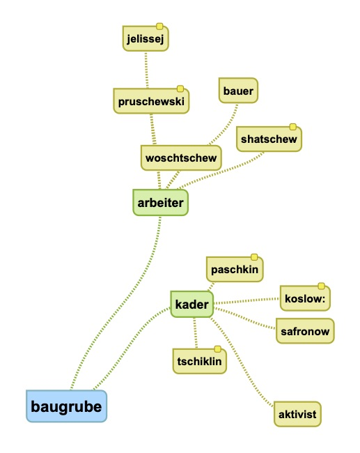

sind wir angekommen? go forth ... oder vertiefen Sie sich kurz in das figurenschema:

so schlimm ist es doch nicht. problem dennoch: wir kommen zu keiner klaren haltung irgendeiner instanz, die uns die geschichte erzählen würde; aus sämtlichen perspektiven werden uns abwechselnd inneneinsichten geboten. man ist geneigt, in woschtschew eine art protagonist zu erkennen, da er die erzählung einleitet, uns recht eigentlich mitnimmt in die baugrube – wo dann sehr konsequent die individualität aufhört und der kolchos beginnt.